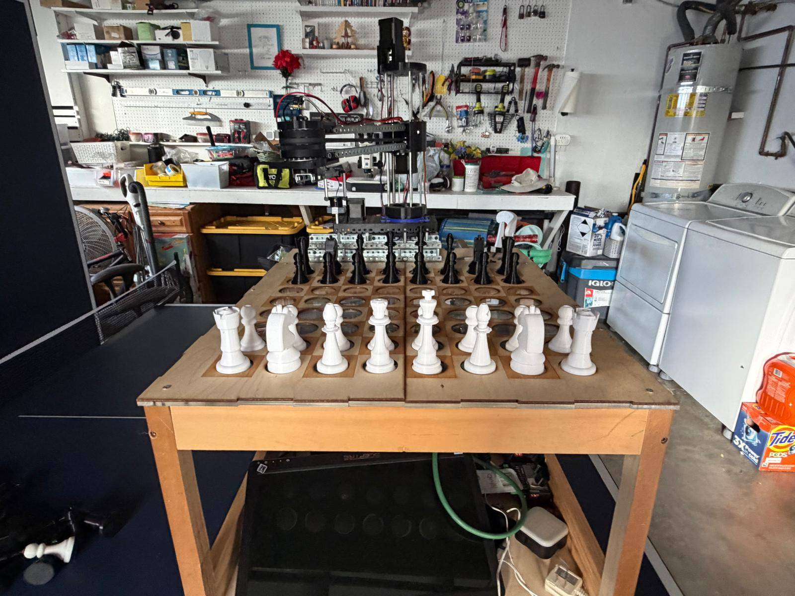

A robot that plays physical chess
A camera reads the board, a game algorithm picks a reply, and inverse kinematics and motor control turn that reply into a real piece moving on a real board.

Sanskar Sharma and Kai Trees. I wrote all of the software and CAD designed the pieces. My partner built the arm and the board. We overlapped on testing and integration.
October 2025 to present. Piece movement and electronics work, and the game algorithm matches an opponent's skill. Remaining work is calibration and full integration.
Raspberry Pi, Python, stepper drivers, electromagnet and relay, Fusion 360, 3D printer, laser cutter.
How it works
Every move goes through the same loop, running on a Raspberry Pi inside the board.
| Stage | What it does | Details |
|---|---|---|
| 1. See | A camera under the board classifies each square as red, yellow or empty | Vision, CV |
| 2. Track | Compares the board before and after to find the move played | CV |
| 3. Decide | A game algorithm chooses a reply at a set skill level | Below |
| 4. Aim | Inverse kinematics converts the target square into joint angles | Kinematics |
| 5. Move | Stepper control, lift, and electromagnet on and off | Arm |
See it play
Game algorithm
Once the vision system has tracked the opponent's move, the game algorithm chooses the robot's reply. It is set up to match the opponent's level of skill, so a beginner and a strong player can both get a fair game. The chosen move then goes to inverse kinematics and motor control.